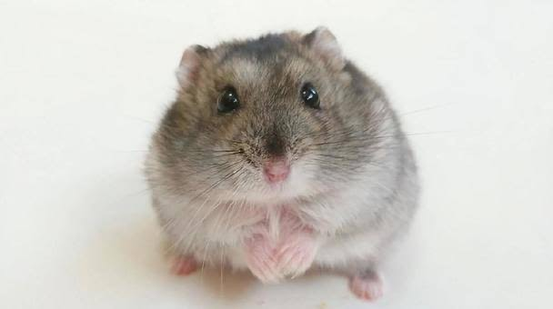

特徴
ジャンガリアンハムスターは小型のハムスターで、体長は約7-10cm程度です。毛がふわふわしており、特に冬毛がモコモコになるのが特徴です。性格はおとなしく、比較的飼いやすい種類です。
飼育方法
ジャンガリアンハムスターは、広めのケージとシンプルな道具があれば飼うことができます。寝床やトンネルを提供することで、ストレスを減らし快適な環境を作りましょう。定期的に小屋の掃除をして、清潔な環境を保ちましょう。
注意点
小さな体のため、強い衝撃に注意が必要です。また、ジャンガリアンハムスターは夜行性なので、昼間の活動音が気になる場合は、音を遮断できる場所で飼育しましょう。
